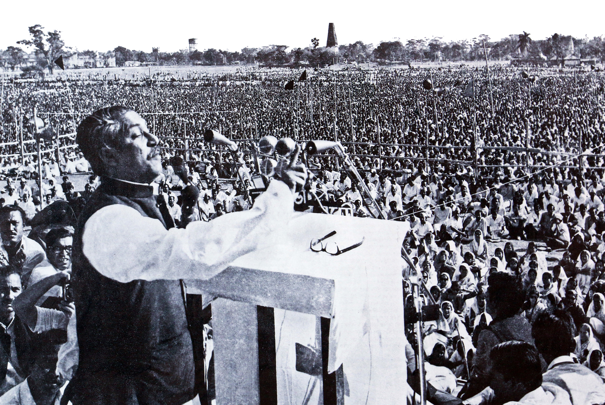
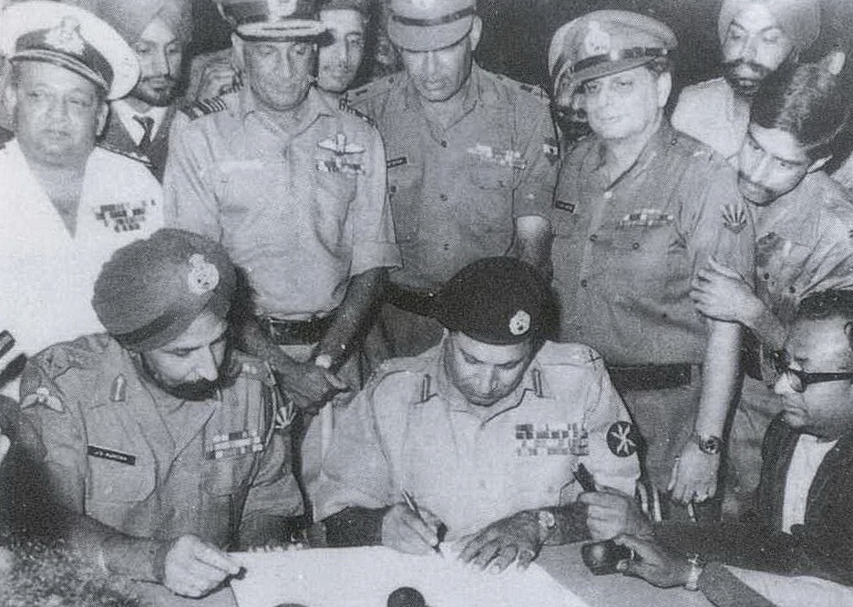
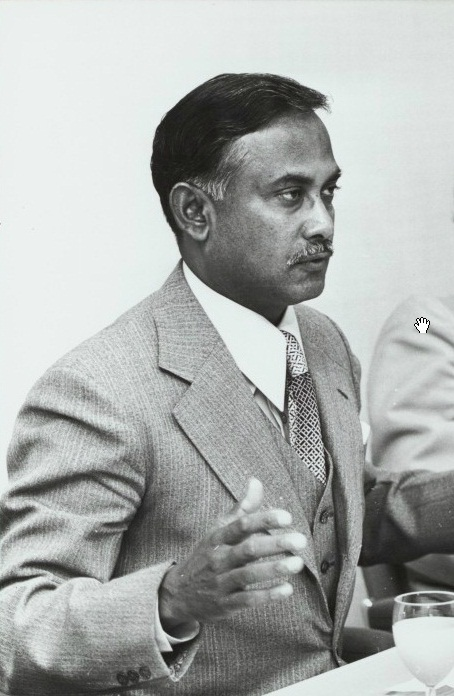
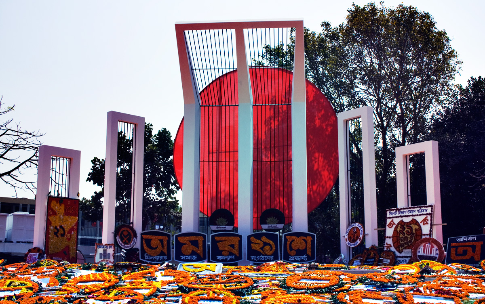
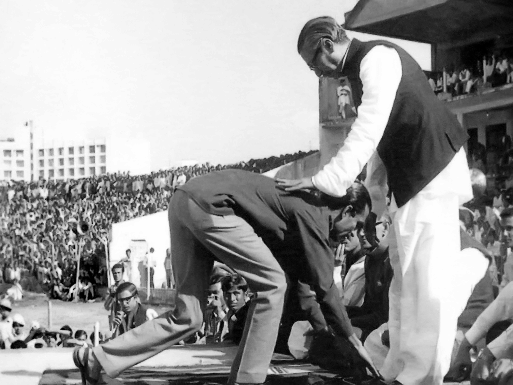
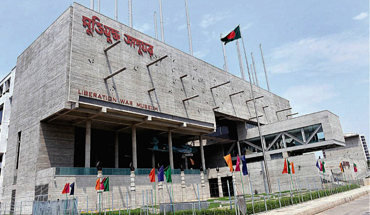

Photographs
This gallery brings together photographs from 1971, organized into events, locations, and themes. Click any photograph to view it at full size, zoom in for detail, or download a copy.






